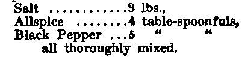

Chapter IV. Dressing And Keeping Game And Fish
Description
This section is from the book "Camp Cookery", by Horace Kephart. Also available from Amazon: Camp Cookery.
Chapter IV. Dressing And Keeping Game And Fish
IT is not necessary to hang a deer up to skin and butcher it; but that is the more cleanly way. One man, unassisted, can hang a pretty heavy animal in the following way: Drag it headforemost to a sapling that is just limber enough to bend near the ground when you climb it. Cut three poles, ten or twelve feet long, with crotches near the ends. Climb the sapling and trim off the top, leaving the stub of one stout branch near the top. Tie your belt into a loop around the deer's antlers or throat. Bend the sapling down until you can slip the loop over the end of the sapling. The latter, acting as a spring-pole, will lift part of the deer's weight. Then place the crotches of the poles under the fork of the sapling, the butts of the poles radiating outward, thus forming a tripod. Push first on one , pole, then on another, and so raise the carcass free from the ground.
If you do not intend to butcher the deer immediately, raise it up out of reach of roving dogs and "varmints," and put a smudge under it of rotten wood, well banked with stones and earth so that it cannot blow around and set the woods afire. The smudge will help to keep away blow-flies and birds of prey, and will guide you back to the place.
It is common practice to hang deer by gambrels with the head down; but, when hung head up, the animal is easier to skin, easier Ho butcher, drains better, and does not drip blood and juices over the neck and head, which you may want to have mounted for a trophy. Dried blood is very hard to remove from hair or fur. If the skin is stripped off from rear to head it will be hard to grain.
The more common way of skinning a deer, when the head is not wanted for mounting, is to hang it up by one hind leg and begin skinning at the hock, peeling the legs, then the body, and finally the neck, then removing the head with skin on (for baking in a hole), after which the carcass is swung by both legs and is eviscerated.
If this is a buck, you may wish to save the head for mounting. For this, the skin of the whole neck must be preserved, clear back to the shoulders. Cleanse away any blood that may have issued from the nose and mouth and stuff some dry moss, or other absorbent, in the beast's mouth. Open your jackknife, insert the point, edge up, where the neck joins the back, and cut the skin in a circle around the base of the neck, running from the withers down over the front of the shoulder-blade to the brisket or point of the breast on each side. Do not skin the head at present— you may not have time for that. Insert the point of the knife through the skin over the paunch, and, following the middle line of the chest, slit upward to meet the cut around the neck. Then reverse, and continue the slit backward to the end of the tail, being careful not to perforate the walls of the belly. Then slit along the inside of each leg from the hoof to the belly-slit. If you wish to save the feet for mounting, be particular to rip the skin in a straight line up the under side of the leg, starting by inserting the point of the knife between the heel-pads.
Now comes a nice trick, that of severing the shanks. Nearly every inexperienced person starts too high. Study the accompanying illustrations of these joints, noting where the arrow points, which is the place to use your knife. In a deer the joint is about an inch and a half below the hock on the hind leg, and an inch below the knee on the fore leg. Cut square across through skin and muscles, in front, and similarly behind; then, with a quick pull backward against your knee, snap the shank off. The joint of the fore leg is broken in a similar manner, excepting that it is snapped forward.
Having stripped the vertebrae from the tail, now peel the skin off the whole animal, from the shoulders downward, assisting with your closed fist, and, where necessary, with the knife; but wherever the knife is used be careful to scrape the skin as clean as you can, without cutting it, for every adhering bit of fat, flesh, or membrane must be thoroughly removed before the skin is ready for tanning, and that is easier to do now than after it dries. The whole operation of skinning is much easier while the animal is still warm than after the body has become cold. To skin a frozen animal is a desperately mean job. I have known four old hunters to work nearly a whole afternoon in skinning a frozen bear.
Fig. 7. The place to Use Your Knife. From Forest and Stream.
The skin of the body, and limbs having been removed, stretch it out flat, hair side down, alongside of you to receive portions of the meat as it is butchered. Now take up your knife, insert its point alongside the breastbone, and cut through the false ribs to the point of the sternum. In a young animal this is easy; but in an old one the ribs have ossified, and you must search for the soft points of union between the ribs and the sternum, which are rather hard to find. Here your knife's temper, and perhaps your own, will be put to the test. The most trifling-looking pocket hatchet would do the trick in a jiffy.
Open the abdominal cavity, taking care not to rupture anything, and prop the chest open a few inches with a stick, or by merely pulling the ribs away from each other. Cut the diaphragm free at both sides and at the back. (It is the membrane that separates the organs of the chest from those of the abdomen.) Everything now is free from the body except at the throat and anus. Reach in and take in your grasp all the vessels that run up into the neck. With knife in the other hand, cut them across from above downward, taking care that you do not. cut yourself. Now pull away gradually, helping a little here and there with the knife until all the contents of the visceral cavity lie at your feet, save the lower end of the rectum, which is still attached. With a hatchet, if you had one, you would now split the pelvis. The thing can be done with a large knife, if the animal is not too old, by finding the soft suture at the highest part of the bone and rocking the knife-edge on it. But you may not be able to accomplish this just now. So reach in with the jack-knife, cut carefully around the rectum and urinary organs, keeping as close to the bone as possible, and free everything from the cavity. If water is near, wash out the abdominal cavity and let it drain.
To remove the head; flay back the skin for several inches at base of neck, cut through flesh, etc., to the backbone. Search along this till you find the flat joint between the faces of two vertebrae, separate these as far as you can; then twist the attached part of the body round and round, until it breaks off.*
In butchering, save the liver, heart, brain, milt (spleen), kidneys, and the caul fat. The caul is the fold of membrane loaded with fat that covers most of the intestines. In removing the liver you need not bother about a gall-bladder, for a deer has none. Many a tenderfoot has been tricked into looking for it.
If one is in a hurry, and is not particular about the hide, he can do his butchering on the ground. In that case, lay the animal on sloping ground, with its head uphill; or bend its back over a log or rock; or turn it on its back with its head twisted around and wedged under one side.
In butchering an elk or moose that has antlers, first remove the head. Then turn the body on its back and prop it in position with a couple of three-foot stakes sharpened at both ends, a hole being dug for a moose's withers. Sometimes only the haunches, sirloins, and tongue are saved, these being cut away without skinning or gutting the carcass.
*Directions how to skin a head for mounting are given in my Camping and Woodcraft, Chap. XIX.
Bears are skinned on the ground, beginning the incisions at the feet and leaving the scalp, or skin of the whole head, attached. It is quite a task to flesh the pelts, as they are fatty and greasy. All of the caul fat should be saved for rendering into bear's oil, which is much better and wholesomer than lard. The brain, liver, and milt are good eating.
If a hide is to be preserved for some time in a green state, use nothing on it but salt. Spread it out flat, hair side down, stretch the legs, flanks, etc., and rub all parts thoroughly with salt, particular pains being taken to leave no little fold untreated. A moose-hide will take ten or even fifteen pounds of salt. As soon as the salting is done, fold in the legs and roll the hide up.
When a deer has merely been eviscerated and is hung up to be skinned, and cut up at a more convenient season, prop open the abdominal cavity with a stick, so that it may dry out quickly. If the weather is warm enough at any hour of the day for flies to come out, keep a smudge, going under the carcass. It takes flies but a few minutes to raise Ned with venison. If blows are discovered on the meat, remove them, looking especially at all folds and nicks in the meat, and around the bones, for the blows work into such places very quickly. So long as they have not bored into the flesh they do it no harm.
It may be said here that even smoked bacon is not immune from blows, and it should not be hung up without a cheesecloth cover. The fly that blows meats is the same that starts "skippers" in cheese.
Hornaday gives the following rule, in his Nat-ural History, for computing the live weight of deer from the dressed weight: Add four ciphers to the dressed weight in pounds, and divide by 78,612; the quotient will be the live weight in pounds.
Now for what Shakespeare calls "small deer":
I must take issue with Nessmuk on the art of skinning a squirrel. He says: "Chop off head, tail, and feet with the hatchet; cut the skin on the back crosswise, and, inserting the two middle fingers, pull the skin off in two parts (head and tail). Clean and cut the squirrel in halves, leaving two ribs on the hind quarters." The objection is that, in this case, you throw away the best part of the squirrel, the cheek meat and brain being its special tid-bits.
A better way is this: Sever the tail from below, holding your left forefinger close in behind it, and cutting through the vertebrae close up to the body, leaving only the hide on the top side. Then turn the squirrel over and cut a slit down along each ham. Put your foot on the tail, hold the rear end of the squirrel in your hand, and pull, stripping the skin off to the fore legs. Peel the skin from the hind legs, and cut off the feet. Then cut off the fore feet. Skin to the neck; assist here a little with the knife; then skin to the ears; cut off the butts of the ears; then skin till the blue of the eyeballs shows, and cut; then to the nose till the teeth show, and cut it off. Thus you get no hair on the meat, and the whole thing is done in less than a minute.
Turkeys, geese, ducks, and grouse are usually dry picked. If this could be done while the bodies were still warm, it would be no job at all; but after they are cold it generally results in a good deal of laceration of the skin—so much so that sometimes the disgusted operator gives up and skins the whole bird. It would be better to scald them first, like chickens. In dry picking, hang the bird up by one leg, pluck first the pinions and tail feathers; then the small feathers from shanks and inside of thighs; then the others. Grasp only a few feathers at a time between finger and thumb, as close to the skin as possible, and pull quickly toward the head. Then pick out all pin-feathers and quills. Singe the down off quickly, so as not to give an oily appearance to the skin. Ordinarily the down can be removed from a duck's breast by grasping the bird by the neck and giving one sweep of the open hand down one side of the body and then one down the other. In plucking geese or ducks some use finely powdered resin to remove the pin-feathers. The bird is plucked dry, then rubbed all over with the resin, dipped in and out of boiling water seven or eight times, and then the pin-feathers and down are easily rubbed off.
To draw a bird: cut off the head, and the legs at the first joint. Make a lengthwise slit on back at base of neck and sever neck bone close to body, also the membrane which holds the windpipe. Make a lengthwise incision from breastbone to (and around) the vent, so you can easily draw the insides, which must be done carefully, so as not to rupture the gall-bladder. The idea that ducks and other game birds should hang until they smell badly is monstrous. If you want to know where such tastes originated, read the annals of medieval sieges.
A small trout is easily cleaned by tearing out the gills with thumb and forefinger and drawing the inside out with them. In a large trout the gills should be cut free from the lower jaw and back of head, and a slit cut along the under side from head to fin; the inside is then drawn out by the gills, leaving the fish clean within.
To scale a fish: grasp it by the head, and, using a knife that is not over-keen, scale first one side and then the other, with swift, steady sweeps toward you. The scales below the gills, and those near the fins, are removed by moving the point of the knife crosswise to the fish's length. Next place the knife just below the belly fin and with a slant stroke cut off this, the side fins, and the head, all in one piece. Then remove the back fin, and the spines beneath it, by making a deep incision on each side of the fin and pulling the latter out. The ventral part is removed in the same way. Open the fish, wash it in cold water, scrape off the slime, and then wipe it dry with a clean cloth or towel. Large fish, for broiling, should be split open along the back and the spine removed.
Some fish, such as yellow perch, are better skinned than scaled. Grasp the fish firmly, belly down. Cut across the nape of the neck, run the point of the knife along the back to the tail, and on each side of the' back fin. Remove the fin by catching lower end between thumb and knife blade and pulling smartly upward toward the head. Skin each side by seizing between thumb and knife the flap of skin at nape and jerking outward and downward; then the rest, by grasping skin as near the vent as possible and tearing quickly down to the tail, bring away the anal fin. Remove the head and the entrails will come with it. Trout and pickerel should be scraped free of slime.
To skin a bullhead: cut off the ends of the spines, slit the skin behind and around the head, and then from this point along the back to the tail, cutting around the back fin. Then peel the two corners of the skin well down, sever the backbone, and, holding to the corners of the skin with one hand, pull the fish's body free from the skin with the other.
To skin an eel: nail it up by the tail at a convenient height, or impale it thus on the sharpened end of a little stake; cut through the skin, around the body, just forward of the tail, work its edges loose, then pull, stripping off the skin entire. If preferred, the skin can be scalded.
Venison keeps a long time without curing, if the climate is cool and dry. To cure a deer's ham, hang it up by the shank, divide the muscles just above the hock, and insert a handful of dry salt. The meat of the deer tribe gets more tender and better flavored the longer it is hung up. In warm weather dust flour all over a haunch or saddle of venison, sew it up in a loose bag of cheesecloth, and hang it in a shady place where there is a current of air. It will keep sweet for several weeks, if there is no crevice in the bag through which insects can penetrate. Ordinarily it is best not to salt meat, for salt draws the juices. Bear meat, however, requires much salt to cure it— more than any other game animal. Hornaday recommends the following recipe for curing venison:—
The nronortions of the mixture I use are:
Take a ham of deer, elk, or mountain sheep, or fall-killed mountain goat, and as soon as possible after killing, dissect the thigh, muscle by muscle. Any one can learn to do this by following up with the knife the natural divisions between the muscles. With big game like elk, some of the muscles of the thigh are so thick they require to be split in two. A piece of meat should not exceed five inches in thickness. Skin off all enveloping membranes, so that the curative powder will come in direct contact with the raw, moist flesh. The flesh must be sufficiently fresh and moist that the preservative will readily adhere to it. The best size for pieces of meat to be cured by this process is not over a foot long, by six or eight inches wide and four inches thick.
When each piece has been neatly and skilfully prepared rub the powder upon every part of the surface, and let the mixture adhere as much as it will.. Then hang up each piece of meat, by a string through a hole in the smaller end, and let it dry in the wind. If the sun is hot, keep the meat in the shade; but in the North the sun helps the process. Never let the meat get wet. If the weather is rainy for a long period, hang your meat-rack where it will get heat from the camp-fire, but no more smoke than is unavoidable, and cover it at night with a piece of canvas.
Meat thus prepared is not at its best for eating until it is about a month old; then slice it thin. After that no sportsman, or hunter, or trapper can get enough of it. . . .
No; this is not "jerked" meat. It is many times better. It is always eaten uncooked, and as a concentrated, stimulating food for men in the wilds it is valuable.
(Hornaday. Camp-fires in the Canadian Rockies, 201-203).
It is a curious fact that blow-flies work close to the ground, and will seldom meddle with meat that is hung more than ten feet above the ground. Game or fish suspended at a height of twenty feet will be immune from "blows".
To keep fish that must be carried some distance, in hot weather: clean them as soon as you can after they are caught, and wipe them dry. Then rub a little salt along their backbones, but nowhere else. Do not pile them touching each other, but between layers of cheesecloth, nettles, or basswood leaves.
To keep fish in camp: scale, clean, and behead them; then string them by a cord through their tails and hang them, head down, in a shady, dry, breezy place. Never use fish that have been lying in the sun or that have begun to soften. Ptomaine poisoning works in a mysterious but effectual way.
To dry fish for future use: split them along the back, remove the backbones and entrails, salt the fish, and hang them up on a frame over a smudge until they are well smoked. Or, make a trough by hewing out a softwood log, place the split fish in this, and cover them with a weak brine for one or two nights. Make a conical bark tepee on a tripod, suspend the fish in it, and dry and smoke them over a small fire for three days and nights.
To ship rabbits, squirrels, etc.: do not skin them, but remove the entrails, wipe the insides perfectly dry, wrap in paper, and pack them back down.
Never pack birds or fish in straw or grass without ice, for in damp or warm weather this will heat or sweat them. Do not let them freeze, as they will quickly spoil after thawing. Food in a bird's crop soon sours; the crop should be removed.
To preserve birds in warm weather for shipment: draw them, wash the inside perfectly clean, dry thoroughly, and then take pieces of charcoal from the fireplace, wrap them in a thin rag, and fill the abdominal cavity with this. Also fill the bill, ears, eyes, and anal opening with powdered charcoal, to keep off flies and prevent putrefaction. Reject all pieces of charcoal that are only half-burnt or have the odor of creosote. Birds stuffed in this way will keep sweet for a week in hot weather.
If you pack birds or fish in ice, wrap them first in many thicknesses of paper or grass, so that no ice can touch them.
Continue to: